Tài liệu bài tập
Notebook có output Run all mới trên Colab T4 ngày 20/11/2026. Colab mở notebook từ nhánh main trên GitHub.
Notebook
Đủ 11 mục theo mẫu Oxford Pets; output và kết luận từ lần chạy mới.
PDF report
Báo cáo riêng của bài tập lớn này
YouTube
Video Public hoặc Unlisted · khuyến nghị 5–10 phút
Mô tả tập dữ liệu và EDA
Nguồn: VLSP Sentiment Dataset v5. Nhãn −1: tiêu cực, 0: trung lập, +1: tích cực. Số dòng đọc từ CSV và số dòng sử dụng được báo riêng.
Quy mô dữ liệu
| Tập | Dòng gốc | Dòng sử dụng |
|---|---|---|
| Base | 5100 | 5022 |
| Augmented | 10149 | 9934 |
| Test | 1050 | 1050 |
Khám phá dữ liệu

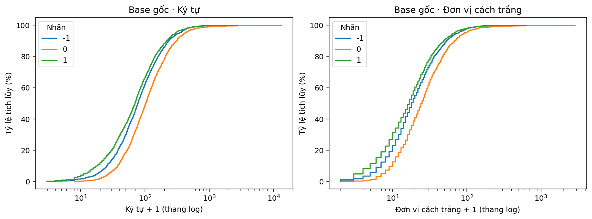

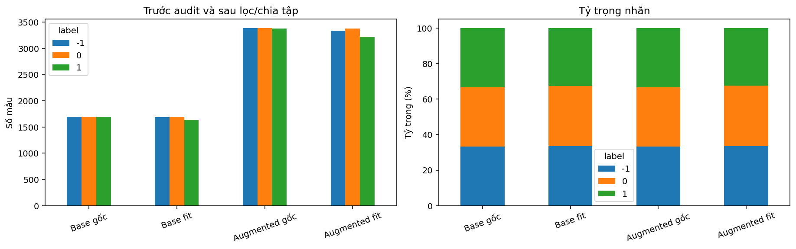

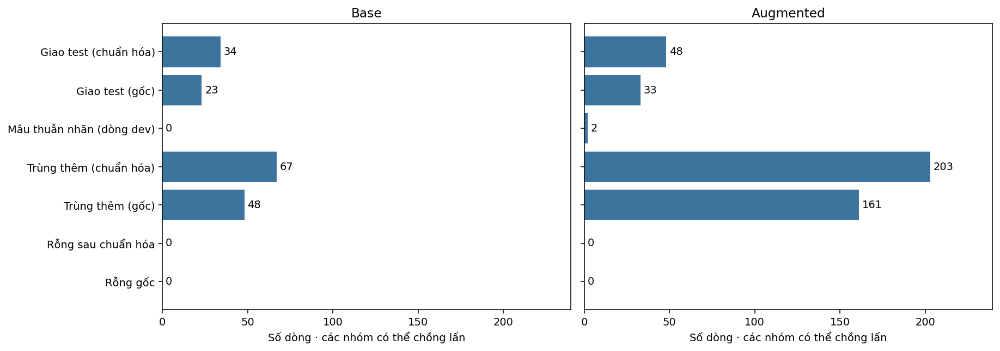

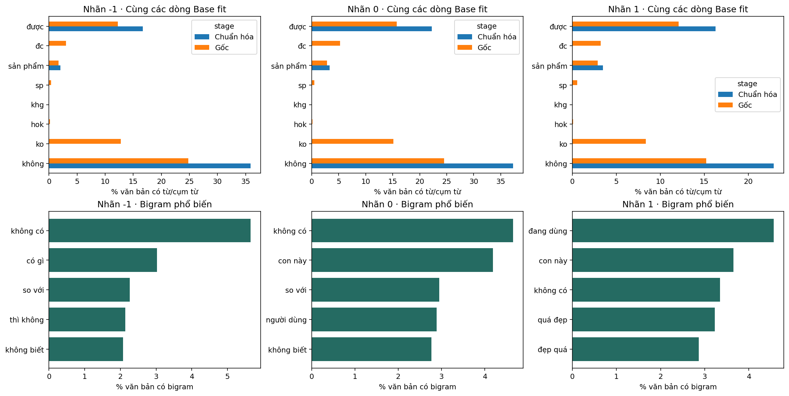

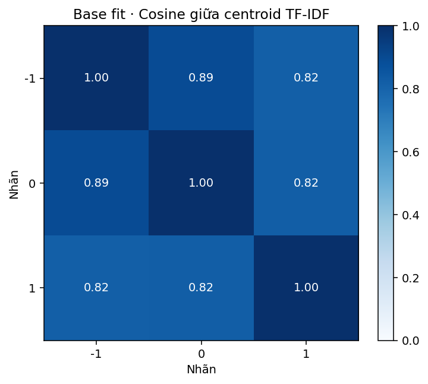

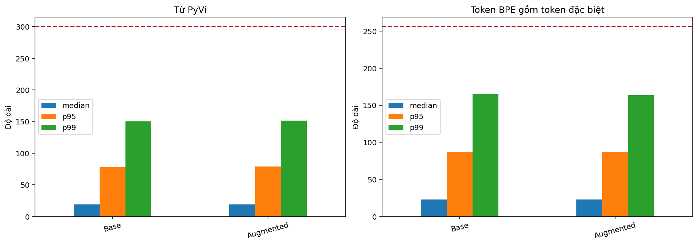
Chuẩn bị dữ liệu
Giữ văn bản gốc; chuẩn Unicode, teencode và emoticon; giữ dấu tiếng Việt, chữ số và phủ định. Dữ liệu phát triển loại câu rỗng, trùng test và nhóm mâu thuẫn nhãn trước khi gộp các câu trùng.
Cách đánh giá: cấu hình cố định, thiếu lineage. Thiếu lineage: không chia validation ngẫu nhiên từ dữ liệu tăng cường; chạy 15 epoch cho CNN/LSTM, 6 epoch cho PhoBERT và dùng epoch cuối cố định. Test dùng sau khi hoàn tất huấn luyện.
TF-IDF/vocabulary chỉ fit trên dữ liệu huấn luyện của từng phiên bản. Word2Vec dùng PAD/UNK, embedding riêng và pooling có masking/packing. PhoBERT dùng RDRSegmenter trước BPE, tối đa 256 token và effective batch 32.
Mô hình, đường học và kết quả
Sáu kiến trúc: TF-IDF + LinearSVC, TF-IDF + 1D-CNN, TextCNN, BiLSTM, CNN+BiLSTM và PhoBERT-base-v2. TF-IDF + CNN tích chập theo trục đặc trưng từ vựng; trục này không biểu diễn thứ tự từ trong câu.
Thời gian train tính từ fit bộ xử lý/khởi tạo mô hình đến hết train và validation; không gồm nạp CBOW chung hoặc test. Lượt đầu có thể gồm tải pretrained. Các số này không phải phép đo latency phục vụ production.
Đường học
Loss và metrics theo epoch thật; thiếu validation thì hình chỉ có train. LinearSVC fit một lần, không có đường học epoch tương đương.

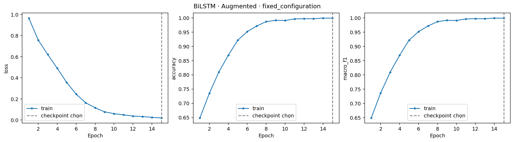

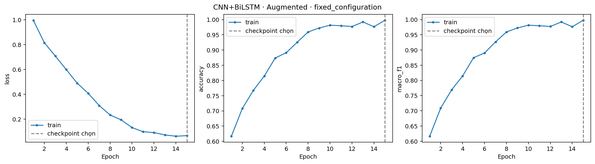

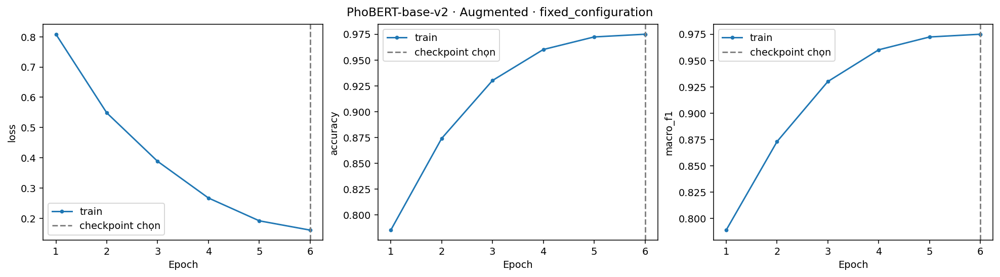

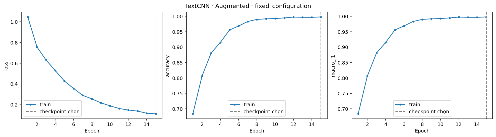

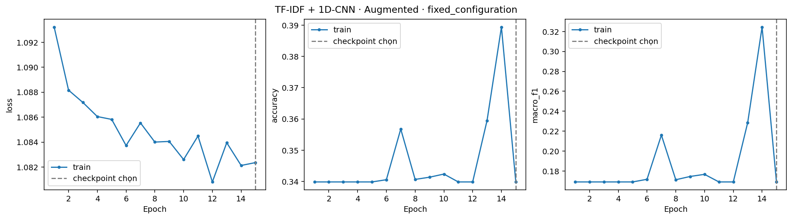
Kết quả cùng tập test
| Mô hình | Dữ liệu | Accuracy (%) | P macro (%) | R macro (%) | F1 macro (%) | Train (s) |
|---|---|---|---|---|---|---|
| PhoBERT-base-v2 | Augmented | 77.81 | 77.64 | 77.81 | 77.65 | 777.6 |
| PhoBERT-base-v2 | Base | 77.71 | 77.49 | 77.71 | 77.52 | 410.5 |
| BiLSTM | Base | 69.14 | 69.14 | 69.14 | 69.14 | 30.4 |
| TF-IDF + LinearSVC | Base | 68.95 | 69.11 | 68.95 | 68.98 | 1.4 |
| BiLSTM | Augmented | 68.38 | 69.48 | 68.38 | 68.54 | 60.2 |
| TF-IDF + LinearSVC | Augmented | 68.19 | 68.17 | 68.19 | 68.17 | 1.7 |
| TextCNN | Augmented | 68.00 | 68.97 | 68.00 | 68.09 | 88.4 |
| TextCNN | Base | 67.81 | 68.68 | 67.81 | 67.81 | 45.7 |
| CNN+BiLSTM | Augmented | 66.29 | 68.07 | 66.29 | 66.41 | 71.6 |
| CNN+BiLSTM | Base | 66.19 | 68.12 | 66.19 | 66.21 | 36.1 |
| TF-IDF + 1D-CNN | Base | 33.52 | 18.91 | 33.52 | 17.33 | 46.3 |
| TF-IDF + 1D-CNN | Augmented | 33.33 | 11.11 | 33.33 | 16.67 | 82.6 |

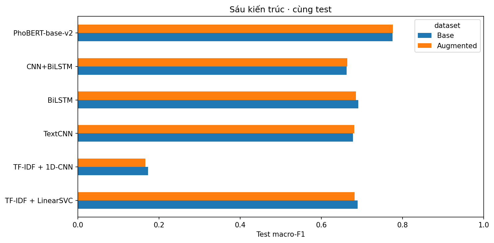
Ảnh hưởng của Augmented so với Base
| Mô hình | Base F1 (%) | Augmented F1 (%) | Δ (điểm %) |
|---|---|---|---|
| TF-IDF + LinearSVC | 68.98 | 68.17 | -0.81 |
| TF-IDF + 1D-CNN | 17.33 | 16.67 | -0.66 |
| TextCNN | 67.81 | 68.09 | +0.27 |
| BiLSTM | 69.14 | 68.54 | -0.60 |
| CNN+BiLSTM | 66.21 | 66.41 | +0.19 |
| PhoBERT-base-v2 | 77.52 | 77.65 | +0.13 |

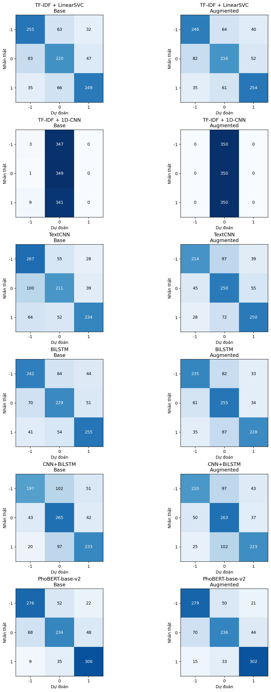
Phân tích lỗi: PhoBERT Augmented có 233/1050 câu sai
| sample_id | Văn bản gốc | Nhãn thật | Dự đoán |
|---|---|---|---|
| test-1 | Đang dùng mx1. Cũng ngon nhưng chưa đầy năm mà đã 3 lần tháo ra thay 3 nút bấm rồi. May còn lột được từ máy khác mà bỏ vào! | -1 | 0 |
| test-10 | Rất đẹp, nhưng phù hợp với đeo cổ chân người Việt hơn. | -1 | 0 |
| test-1002 | Trải nghiệm cá nhân thôi, nói chung thấy con Obi khá được, camera cũng khá tốt, mấy tính năng thú vị khá hay. Nhưng mà nếu cài nhiều ứng dụng nặng quá thì hơi lag | 0 | 1 |
| test-1005 | SẠC NHANH và nhanh hết cũng là đúng thôi nhưng quan trọng vẫn là giá của sản phẩm. | 0 | -1 |
| test-1014 | Nói thẳng là hàng nhái chạy android các thông số thì chỉ bằng 1/3 so với quảng cáo. Pin dùng nửa ngày nói chung bạn mua sản phẩm này chỉ để cho oách thì được còn dùng thì chẳng ra gì. Tốt nhất là đưa số tiền đấy đi mua iphone trả góp 0% bạn à. | 0 | -1 |
Giải thích mô hình đại diện
Trọng số LinearSVC phản ánh điểm quyết định, không phải xác suất. PhoBERT dùng mức giảm xác suất lớp dự đoán ban đầu khi bỏ từng từ trong các câu ngắn được chọn xác định.

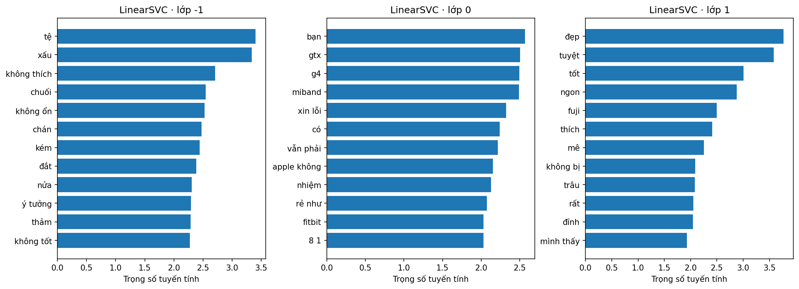

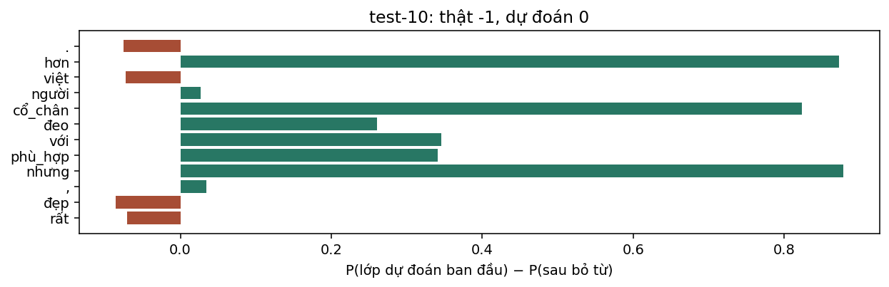

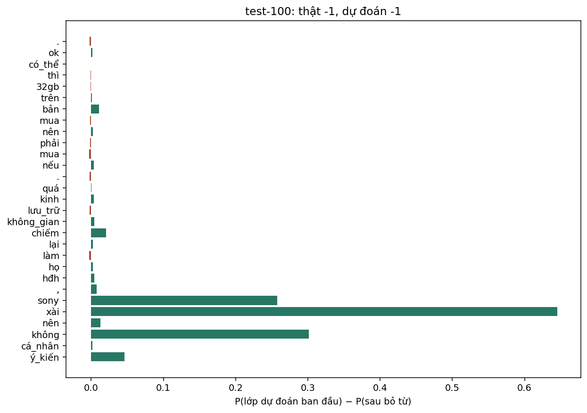

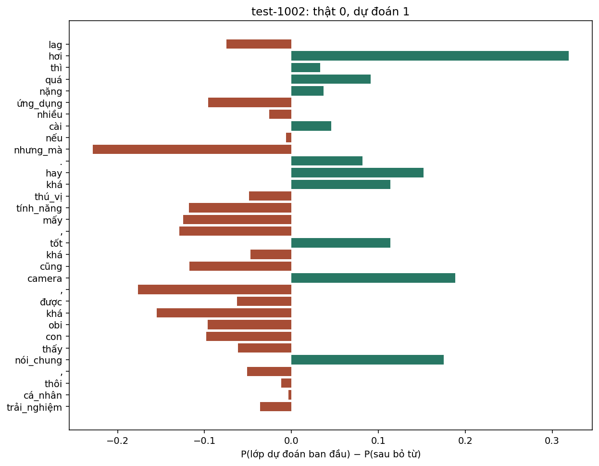

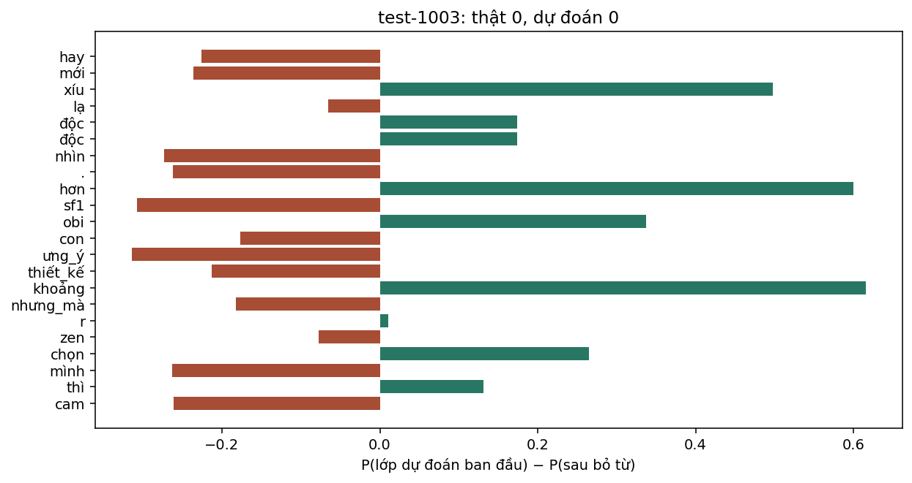
Kết luận và nguồn kết quả
Trong lần chạy seed 42, PhoBERT-base-v2 (Augmented) đạt macro-F1 cao nhất 77.65%, accuracy 77.81%.
Một seed, nguồn augmentation và khả năng gần trùng còn hạn chế kết luận. Các số liệu mô tả lần chạy hiện tại; không suy ra mọi augmentation đều có ích. Tiếp theo có thể bổ sung lineage, chạy nhiều seed và kiểm tra thủ công các cặp nhãn nhầm.
CSV tổng hợp · CSV từng lớp · Dự đoán · Chênh lệch Base/Augmented · Nguồn lần chạy
Nhóm SlightSeek: Phạm Duy Anh (2310139), Nguyễn Phan Tuấn Duy (2310491).